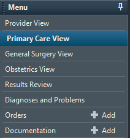

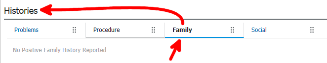
If a patient is adopted, unable to answer, or the history is completely normal, click one of the checkboxes. Otherwise, click the "Add" button.
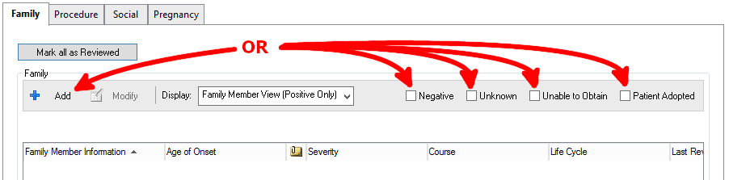
Click in the blue shaded areas on the matrix to add a diagnosis. Double click to access the advanced menu.
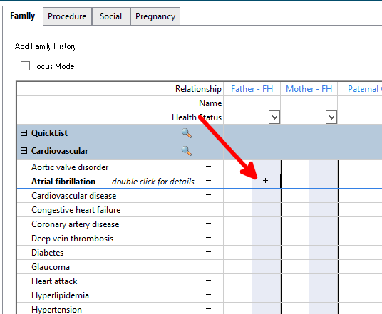
In the advanced menu, you can edit things like the age when the illness struck the family member.
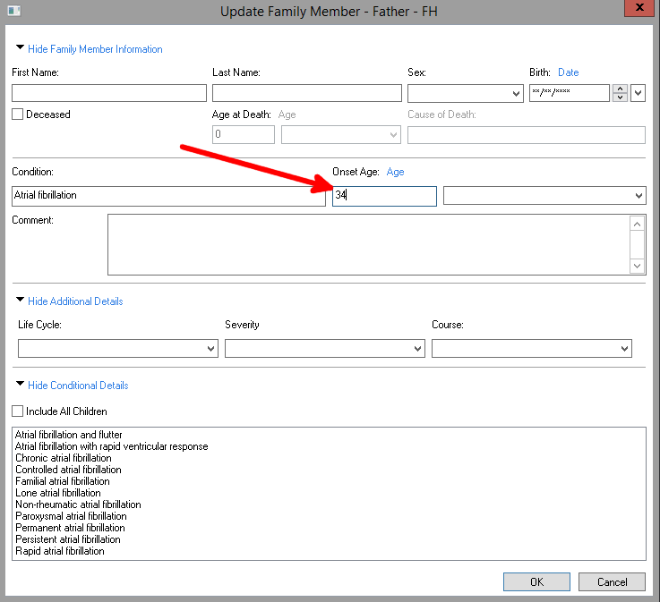
There is no "Hemochromatosis" in the matrix. We can add it to our QuickList by clicking the magnifying glass.
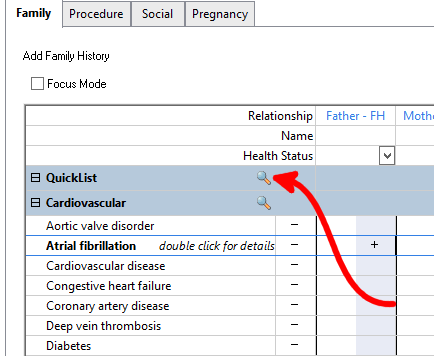
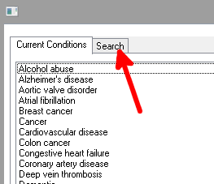
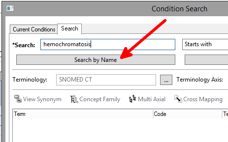
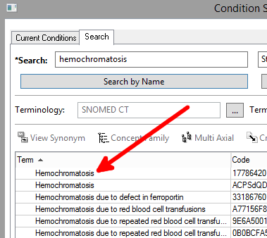
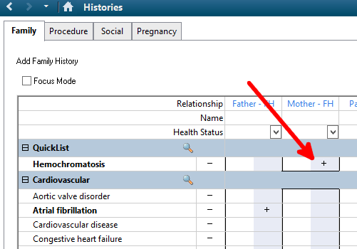
By default only parents and granparents are available, but we can add other family.
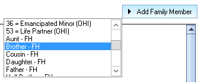
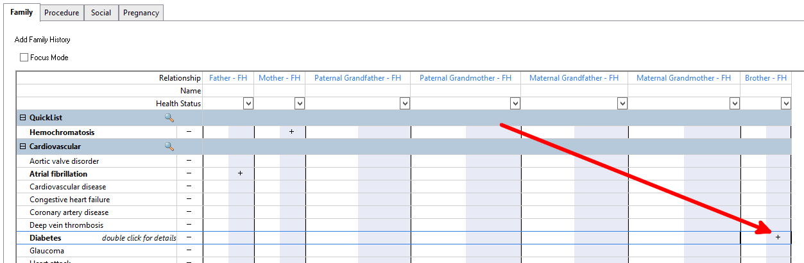
To clear a diagnosis, right click the "+" (plus sign) and select "Clear"
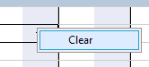
When finished, click "OK"
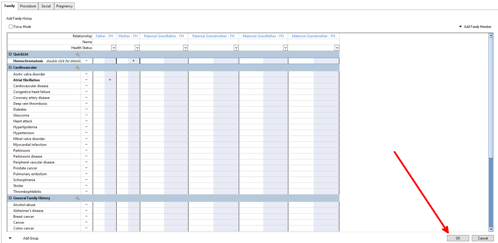
Click the home button to get back to the main menu.
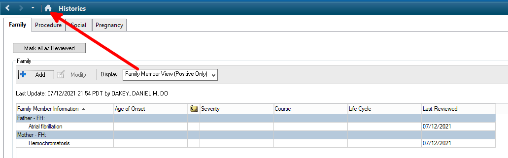